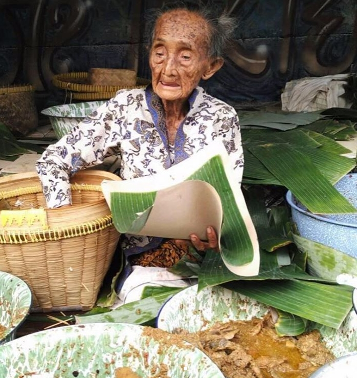
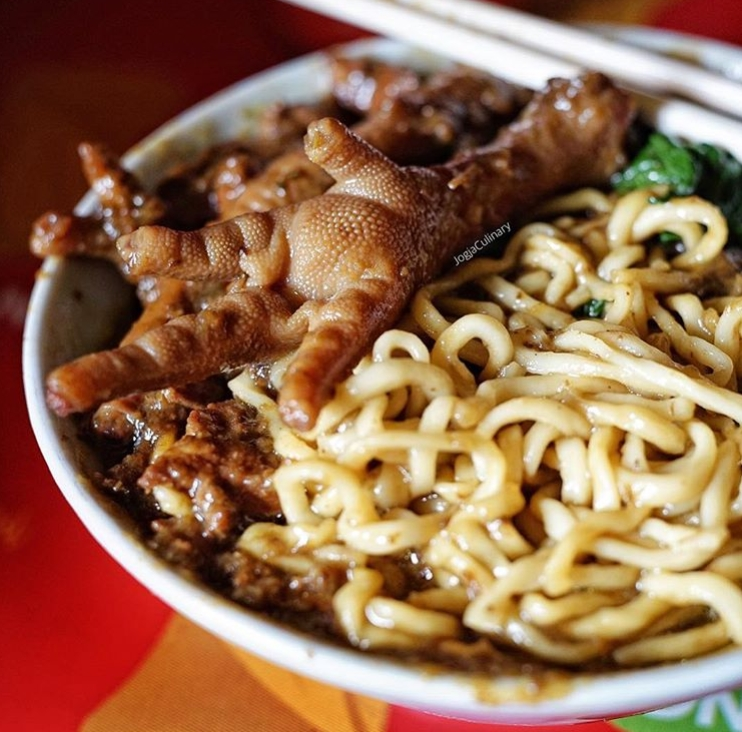
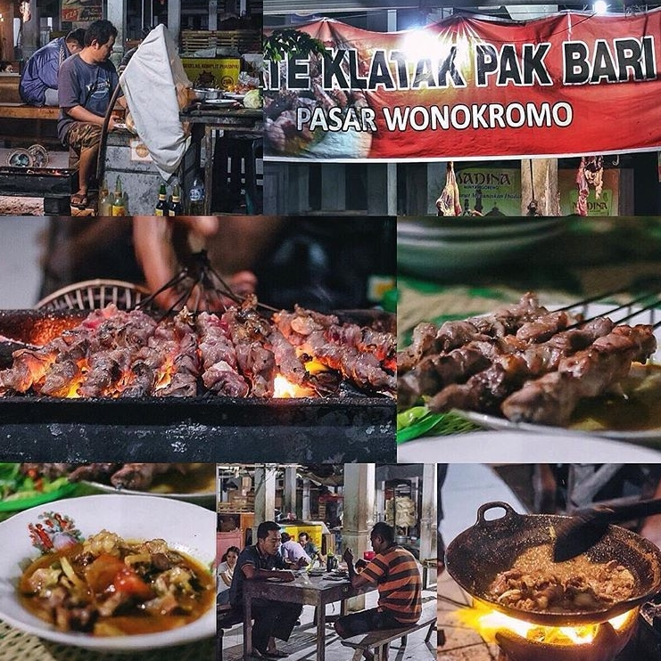
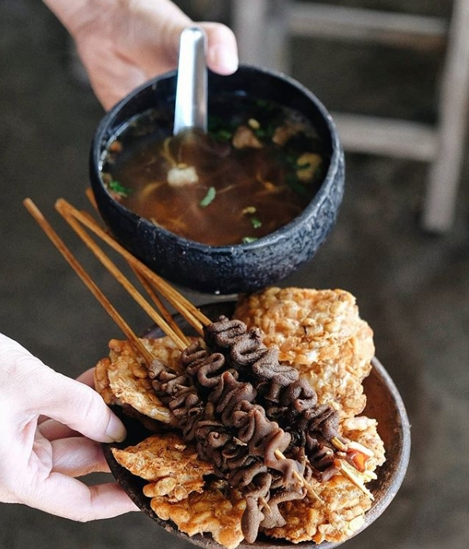
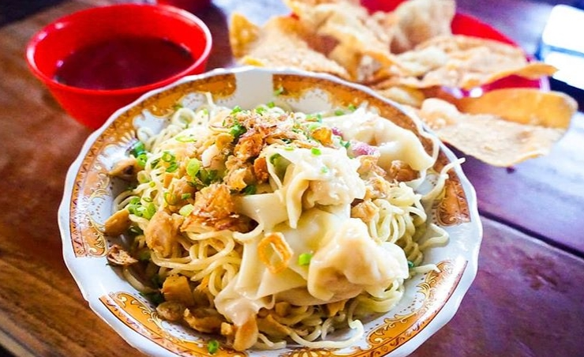

Kuliner Khas Yogyakarta
Siapa yang tidak tahu kalau Jogja merupakan pusat kebudayaan dan wisata di Tanah Jawa. Berpetualang di kota ini tidak lengkap rasanya tanpa menjajal kuliner Jogja. Nah, predikat Kota Pelajar yang tersemat padanya pun ternyata memengaruhi aneka kuliner yang tersedia. Kamu yang pernah menempati Jogja pasti tidak asing dengan angkringan yang berjejal di kota ini.
Hal ini dikarenakan angkringan punya nilai plus berupa harga yang ramah di kantong pelajar dan mahasiswa. Suasana khas kotanya membuat selalu rindu ingin kembali lagi. Cicipi setiap rasa pada makanan khas Jogja mulai dari asam, pedas, manis, serta asinnya. Pulihkan rasa rindu pada Kota Gudeg ini dengan tempat kuliner Yogyakarta yang akan dibahas di bawah!
-
Gudeg Mbah Lindu yang Selalu Membuat Rindu
Kalau kuliner yang satu ini memang sudah legendaris. Kamu bayangkan saja, penjualnya sudah hampir satu abad usianya! Pantas saja rasanya khas Jogja banget. Resep gudegnya bahkan sudah dibuat oleh Mbah Lindu semenjak remaja.
Sembari merasakan sensasi landmark Jogja yakni Malioboro, Kamu pun bisa menyuapkan nasi gudeg di mulut. Jangan heran ya, kalau Kamu dapati antrean yang mengular dan tak kunjung habis. Memang gudeg ini selalu diburu wisatawan.
Kuliner enak Jogja ini dibuka pada pukul 05.00 hingga 11.00. Untuk masalah harga, seperti yang sudah dibahas tadi, Jogja selalu menawarkan makanan yang mudah dijangkau. Jadi, Kamu bisa menikmati gudeg Mbah Lindu hanya dengan Rp 15.000,- saja.
Lokasi: Sosrowijayan, Sosromenduran, Kecamatan Gedong Tengen, Jogja
-
Mie Ayam Bu Tumini yang Wajib Dijajal Penggila Bakmi CS
Kamu suka dengan olahan mie? Jika iya, maka kuliner Jogja yang satu ini tak boleh dilewatkan. Nah, salah satu warung mie ayam yang paling direkomendasikan adalah Mie Ayam Bu Tumini.
Yang membuat kuliner ini berbeda dengan jenis kuliner lainnya adalah kuah yang berwarna cokelat. Serta mie yang kenyal ditemani pula dengan lauk ayam nan menggoda. Kamu juga bisa memilih ceker untuk melengkapi hidangannya. Paling pas sebagai menu makan siangmu sembari menikmati suasana Jogja.
Datanglah pada pukul 10.00 sampai 17.00 WIB pada jam buka dari tempat ini. Kalau lebih pagi atau lebih sore, maka dijamin Kamu gagal merasakan lezatnya mie ayam. Nah, kisaran harganya juga murah banget, hanya Rp 8.000,- sampai Rp 10.000,-.
Lokasi: Imogiri Timur, Umbulharjo, Jogja, DIY
-
Sate Klatak Pak Bari yang Pernah Nongol di AADC 2
Kalau tempat makan yang satu ini tambah laris saja semenjak muncul pada film AADC 2 yang dibintangi oleh Nicholas Saputra dan Dian Sastro Wardoyo. Namun, bukan hanya karena itu saja, cita rasa yang ditawarkan oleh kuliner itu begitu menggoda. Jika biasanya kuliner kambing berbau prengus, maka Sate Klatak ini jauh dari bau yang tidak sedap.
Lebih unik lagi karena sate ini tidak menggunakan bambu, tetapi besi jeruji dari sepeda. Paling cocok Kamu nikmati Sate Klatak Pak Bari dengan gule kambing yang rasanya mantap. Dijamin, deh, ketagihan!
Catat baik-baik jam bukanya, ya, agar Kamu tidak kecewa karena tidak bisa menikmati sajian ini. Tempat kuliner Jogja ini dibuka pada jam 18.30 dan tutup pukul 01.00 WIB. Mulai dari Rp 20.000,- Kamu sudah bisa mencicipi kuliner nan istimewa ini.
Lokasi: Imogiri, Wonokromo, Bantul, Jogja, DIY
-
Soto Bathok Mbah Katro: Emang Katro Kalau Belum Pernah Menyantapnya
Sepertinya sajian soto dari Solo ini layak untuk diberi predikat wisata Kuliner Jogja 2019 paling endeus. Sebab, di sini, Kamu bisa menikmati daging sapi yang kenyal dipadu dengan kuah bening yang segar. Pun, menikmatinya di tengah saung pada hamparan sawah.
Bisa dibilang, Soto Bathok Mbah Katro ini merupakan harmoni wisata budaya dan kuliner yang berpadu. Lengkapi sajian dengan sate usus, tempe goreng, dan juga sate puyuh untuk rasa yang lebih nikmat.
Untuk jam bukanya sendiri dimulai pada pukul 06.00 hingga 16.00 WIB. Kamu bisa menikmati sajian mulai dari Rp 5.000,- setiap porsi. Wah, murah banget, ya!
Lokasi: Candi Sambisari, Purwomartani, Kalasan, Sleman, DIY
-
Yammie Pangsit Pathuk dari Resep Rahasia
Kamu mungkin lebih lekat dengan nama Bakpia Pathuk ketimbang Pangsit Pathuk. Namun, sebenarnya, kuliner ini tidak kalah nge-hits. Nah, Yammie ini adalah olahan mie yang ditaburi dengan ayam cincang. Pelengkapnya adalah pangsit ayam yang enak.
Jajanan street food ini bisa dikategorikan sebagai kuliner Jogja kekinian. Pastinya, Kamu akan dibuat ngiler begitu melihat tampilannya yang menggoda.
Yammie Pangsit dibuka pada pukul 09.00 hingga 21.00. Harganya juga cukup terjangkau. Kamu bisa menyiapkan biaya sebesar Rp 17.000,- untuk menikmati setiap porsinya.
Lokasi: Kemitiran Kidul, Pringgokusuman, Jogja, DIY
Menurutmu, mana yang paling membuat air liur terbit di mulut? Dan, kuliner mana yang paling ingin Kamu cicipi begitu sampai di Jogja? Pastikan mempersiapkan budget lebih, takutnya Kamu khilaf dan memborong banyak kuliner lezatnya.
Nah, kalau Kamu rasa artikel kuliner Jogja ini bermanfaat, silakan bagikan dengan teman di medsos-mu, ya! Kuliner Jogja memang selalu bikin rindu serindu-rindunya!